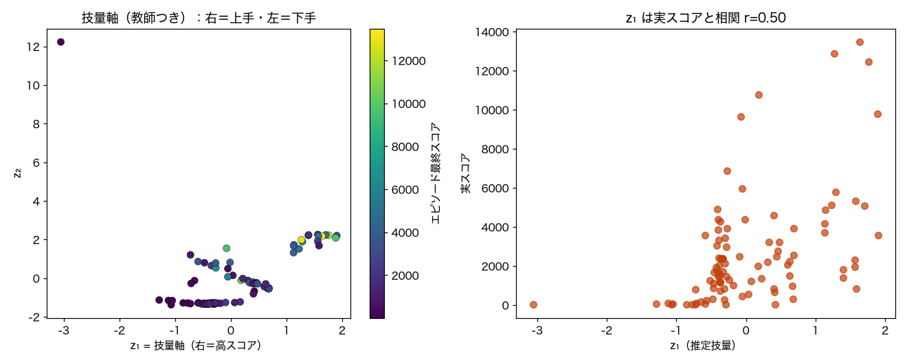
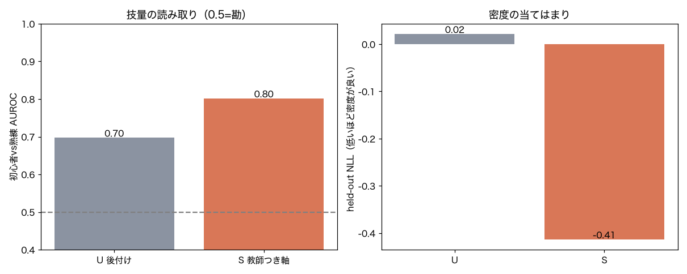

Phase 0：技量軸の基底をMs.パックマンで決める
実人間プレイ（Grand Challenge）＋最終スコアで、潜在に『右＝上手・左＝下手』の軸を通す。基底はガウス＋直線技量軸。
382エピソード数
10–18981スコア範囲
0.802AUROC(教師つき)
0.697AUROC(後付け)
S（教師つき技量軸）採用
1. このデータは何か
Atari Grand Challenge の Ms.パックマン 実人間プレイ（382エピソード）。1エピソード＝行動列＋最終スコア。技量ラベル＝最終スコア（10〜18981と実際に大きくばらつく＝本物の初心者〜上級）。各エピソードからプレイスタイル特徴（行動方向の分布9＋切替率＋エントロピー）を作る（生存時間やスコアは特徴に入れない＝リークなし）。
2. 何を・どう学習したか
条件付き Neural Spline Flow で p(スタイル特徴) を学習し、潜在 z を得る。技量は必ず直線軸（単調・順序尺度なので円は不適）。2方式を比較：
U 教師なし＋後付け：普通に学習→潜在でスコアを線形回帰＝技量方向を後から取り出す（再学習なし）。
S 教師つき技量軸：学習時に z₁≈標準化スコア の項を足し、z₁ そのものを技量軸にする（右＝上手／左＝下手）。
3. 結果
技量の読み取り（初心者vs熟練 AUROC）は 教師つき 0.80 / 後付け 0.70、z₁と実スコアの相関 r=0.50。密度 held-out NLL は U 0.02 / S -0.41。→ 採用＝S（教師つき技量軸）。全ゲームでこの基底（ガウス＋直線技量軸）を固定する。

左:潜在 z₁-z₂ を実スコアで色分け（右ほど高スコア＝上手）。右:z₁ vs 実スコア。

左:技量読み取りAUROC（U後付け vs S教師つき）。右:held-out NLL。
4. 図の見方
左上図：点=1エピソード。色=最終スコア。右に行くほど高スコア（上手）に並んでいれば技量軸が通っている。
右上図：z₁（推定技量）と実スコアが右上がり＝プレイ内容だけから巧さを読めている。
下段：AUROCが高い方式を採用、NLLが極端に悪化していないかも確認。
5. 解釈と意味・使い道
示すこと：実人間プレイのスタイルだけから技量が（ある程度）読め、潜在に『右＝上手・左＝下手』の軸を構成できる。基底＝ガウス＋直線技量軸が妥当（円は移動方向用で、技量には使わない）。
なぜNFか：密度として学ぶので、技量軸＝生成の技量ノブ（初心者風〜熟練風を作る）にそのまま繋がる。
正直な限界：粗い行動スタイルだけなので技量軸はソフト（AUROCは中程度の想定）。状態条件つき特徴（次フェーズ）で鋭くなる。多次元技量は z₂ 以降で。
条件付き Normalizing Flow（zuko NSF）で自動生成。
NF×生活データ探索シリーズの一部。